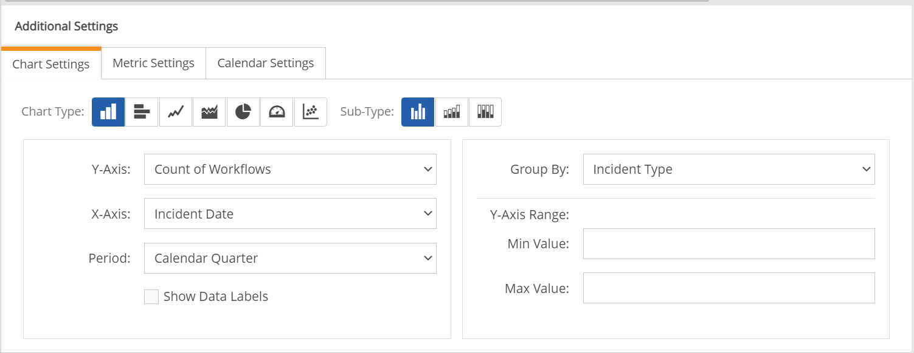
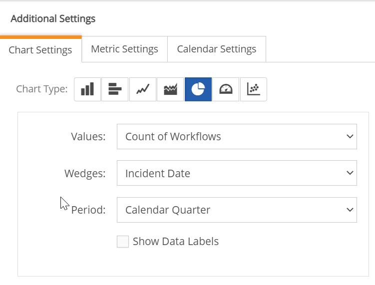
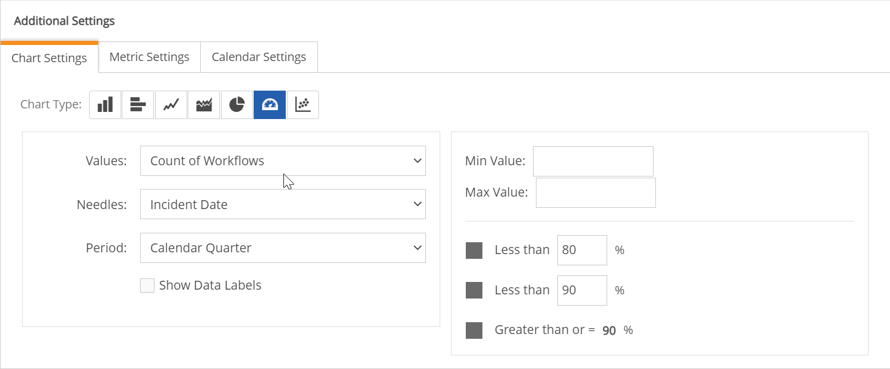
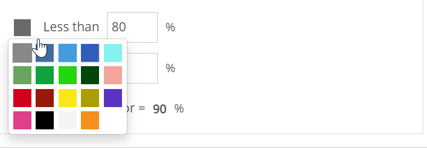
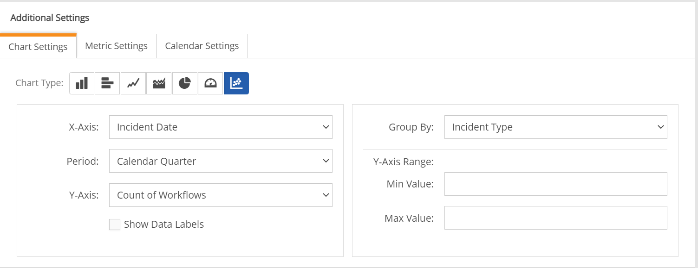

Chart Settings for Workflow and Event panels are accessed from the Edit Panel Content screen. Click Settings, then Edit Panel Content.
Charts are not currently available for Task panels.
For Chart Settings for Numeric Data panels see Configure Numeric Data Panel.
In Panel Edit mode, in the Additional Settings section, select the Chart Settings tab.
Chart Type: Select the icon that represents the Chart Type you want. Once you select the type, the available settings for that type are shown. The options for each setting depend on the field selections made for the table view, as well as the Chart Type selected.

Y-Axis: For Workflows: Count of Workflows (default), Compliance Status, or any aggregation included in the table. For Events: Count of Events.
X-Axis: Defaults to the date field selected for the panel option 'Apply Date Filter To'. For Workflows: Workflow Creation Date, Due Date, Close Date, or other global date field. For Events: Event Instance Begin Date, Facility, Requirement, Log Path, Log Name, Duration. You can also use any of the available fields found in the table settings of the following types: dropdown list, multi-select, Boolean, text fields, (excluding large text).
Y-Axis Range: Minimum and maximum values for the y-axis range.
Period: Options are Calendar Week, Calendar Month, Calendar Quarter or Calendar Year.
Show Data Labels: Select to show data labels in the chart display.
Group By: Optionally, you can select a field to group by. May be any available field of a valid type found in the table.
The bar chart has the same options as Column, but the Y-Axis and X-Axis are flipped.

Values: For Workflows: Count of Workflows (default), Count of Compliance Status. For Events: Count of Events
Wedges: For Workflows: Due Date, Compliance Status, Facility, Activity Name, Program Name, Assigned To, Status. For Events: Event Instance Begin Date, Facility, Requirement, Log Path, Log Name, Duration
Period: Options are Calendar Week, Calendar Month, Calendar Quarter or Calendar Year.
Show Data Labels: Select to show data labels in the chart display.

Values: For Workflows: Count of Workflows (default), Count of Compliance Status. For Events: Count of Events
Needles: For Workflows: Due Date, Compliance Status, Facility, Activity Name, Program Name, Assigned To, Status. For Events: Event Instance Begin Date, Facility, Requirement, Log Path, Log Name, Duration
Min Minimum value for the gauge
Max Maximum value for the gauge
You can set a color to represent three ranges. Click the color block to choose a color. Click in the numeric box to enter the percentage to represent. The Greater Than or = % Value is automatically set to equal the second Less Than value.


X-Axis: For Workflows: Due Date. For Events: Event Instance Begin Date (default), Duration
Period: Calendar Week, Month, Quarter or Year
Y-Axis: For Workflows: Count of Workflows, Count of Compliance Status. For Events: Count of Events
Y-Axis Range: Minimum and maximum values for the y-axis range.
Show Data Labels: Select to show data labels in the chart display.
Group By: For Workflows: None or Compliance Status. For Events: None, Event Instance Begin Date, Facility, Requirement (default), Log Path, Log Name, Duration.